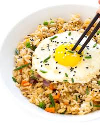

Fried Rice

Description
A staple in every Asian home. It is an extremely flexible dish
where you can put whatever you want. Tread carefully with what you put
because this is also a testament to how good your tastebuds are.
- Rice
- Frying pan
- Vegetables
- Meat of choice
- Sauce of choice
Steps
- Cook the rice in the frying pan and add some chopped garlic and oil
to add flavor and that aroma of fried rice.
- After a couple minutes, add the vegetables.
- As you cook the vegetables, add some sauce of your choice. I'd recommend soy sauce.
- Then chop up some meat like spam, and add it to your fried rice.
- Upon cooking it all, you can add whatever toppings. I would usually add kewpie mayo and yakisoba sauce.